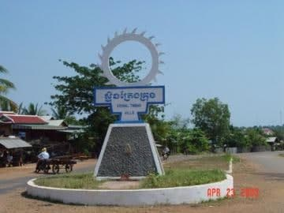

- Siem Reap
- Pailin
- Battambang
- Pursat
- Banteay Meanchey
- Oddar Meanchey
- Preah Vihear
- Kampong Thom
- Kampong Chhnang
- Kampong Cham
- Stung Treng
- Ratanakiri
- Mondulkiri
- Kratie
- Tbongkhmum
- Preyveng
- Svay Rieng
- Kandal
- Phnom Penh
- Takeo
- Kampong Speu
- Kampot
- Kep
- Preah Sihanouk
- koh kong


Stung Treng Travel Guides
General Information
Stung Treng is a northern province of Cambodia. It was formerly called Xieng Teng and was once a part of the vast Khmer Empire, then the Lao kingdom of Lan Xang and later the Lao kingdom of Champassack. During the period of French Indochina it was again ceded to Cambodia.
The provincial capital is also named Stung Treng and is an important trade hub with a few hints of Lao influence scattered about, owing to the fact that the Lao border is about 50 km away. It's a friendly, quiet country town situated on the confluence of the San River and the Mekong River. It actually sits on the banks of the San River, with the mighty Mekong coming into the picture on the northeastern outskirts of he town.
The San River goes by three names, depending on which of the locals you speak to. Some call it the Kong River because the San and Kong Rivers merge together about 10 km northeast of Stung Treng town, confusing people about which name the river should bear. Others call it the Sekong River, which is the combined name of these two rivers. Whatever name the fiver beside the town goes by, it's another one of Cambodia's beautiful picture-postcard river towns. It's a nice place to kick back and chill out if you are on a circuit tour of the Northeast River Scene, from here to Laos.
The San River is fronted in Stung Treng by a nice stretch of paved road. It's the centre of socializing (as in most Cambodian river towns) in the late afternoon and early evening hours as the locals ride up and down the stretch enjoying the view and each other. Drink and dessert stands spring up earlier to serve the daily merrymaking crowd. It's a nice spot for a walk or jog any time of the day as the river road turns into a pleasant rural road that leads to the airport 4 km north of town.
The river port area just in front of the small city park is fairly busy, handling trade between Cambodia and Laos. The ferry across the San River to where National Highway No 7 continues north to the Laos border is also at this pier. The fare is 300 riel per head. We went for a ride on this stretch (2,000 riel for taking a big bike on the ferry), but there is not much to see along the way besides light jungle and some remnants next to the road that was a target of carpet bombing during the Vietnam War years (the road was recently overhauled and is now one of the best in the country). The road works its way eastward so it does not afford views of the Mekong River as one would hope. The few residents we saw along the way were truly amazed to see the likes of us, who would want to be there.
Geography
Stung Treng province, which covers an area of 11,092 square kilometres, is a remote and sparsely populated province in the northeast of Cambodia. It borders Lao to the north, Ratanakiri to the east, Preah Vihear to the west and Kratie and Kompong Thom to the south. The province is divided into five district, 34 communes and 128 villages.
Stung Treng is a unique province quite distinct from other Cambodian provinces in the Mekong basin.Extensive forests, intersecting rivers and streams and low population density characterize it. Stung Treng includes also the western chunk of the massive Virachey National Park, accessible from Siem Pang, a small beautiful town on the Tonle Kong. The province also features three big rivers the Tonle Kong, the Tonle San and the mighty Mekong with its hundreds of small islands scattered on the river stretch in Stung Treng Province.
Population
The population of Stung Treng constitutes just 0.7% of Cambodia's population. The population density is 7 people per square kilometre, which is nine times less than the national density. As the population is low and the province is endowed with natural resources, the immigration rate is very high. This fact has been proven by the population census in 1998, which shows that 19.4% of the province's population has migrated from outside, of which male migrants constitute 55%. The most commonly stated reasons for immigration were moving with family, followed by searching for livelihood.
Similar with other provinces, the female population is higher than the male population. The result of the census in 1998 demonstrates that 50.5% of the population is female. In Stung Treng, about 79.4% of the population are involved in the agriculture sector. The secondary and tertiary sectors account for 2.4% and 18.2% respectively. There are 54,488 male and 55,217 female with a total of 109,705person.
Climate
The country has a tropical climate - warm and humid. In the monsoon season, abundant rain allows for the cultivation of a wide variety of crops. This year-round tropical climate makes Cambodia ideal for developing tourism. Travellers need not to fear natural disasters such as erupting volcanoes or earthquakes, and the country is not directly affected by tropical storms.
Climate: Cambodia can be visited throughout the year. However, those plans to travel extensively by road should be avoided the last two months of the rainy season when some countryside roads may be impassable. The average temperature is about 27 degrees Celsius; the minimum temperature is about 16 degrees. December and January are the coolest months, whereas the hottest is April.
General information about the provincial climate:
- Cool season: November- March (18-26c)
- Hot season: March- May (27c -35c)
- Rainy season: May - October (26-34c, with humidity up to 90%.)
Economy
Stung Treng's economy is based on fishing and silk weaving. However there is also some agricultural farming what is the smallest economical source of the province.
Hopefully the ministry of tourism can manage its newly created development plan.
The last river dolphins (Irrawaddy) in the Mekong River are at the heart of an ambitious development programme to tackle poverty and attract tens of thousands of visitors to the province. The Mekong River Discovery Trail Project will draw visitors to view the endangered fresh water dolphin, which lives in 10 deep-water natural pools in a 190-km stretch of the Mekong River, mostly between the quiet provincial capitals of Kratie and Stung Treng.